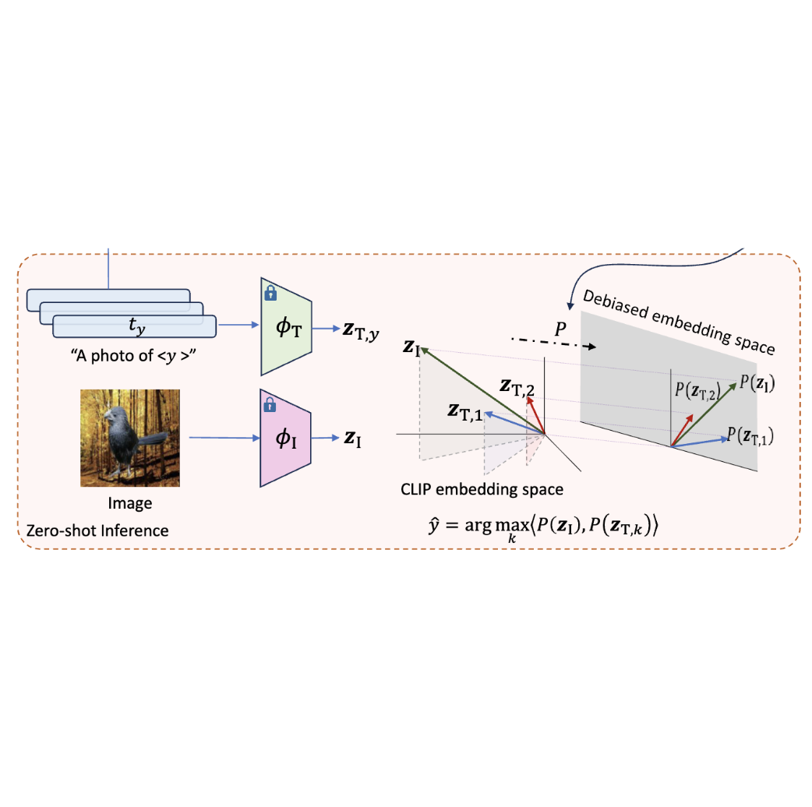

Research
Welcome to the forefront of cutting-edge AI research! My work bridges theory and practice in artificial intelligence, focusing on solving real-world challenges with innovative solutions. With over 500 citations and impactful contributions presented at top-tier conferences like ICCV, AAAI, NeurIPS, and ICASSP, I specialize in federated learning, domain generalization, continual learning, and computer vision. From groundbreaking methods like FedGaLA for privacy-preserving federated learning to pioneering frameworks for long-tailed recognition and out-of-distribution generalization, my research aims to create scalable, fair, and practical AI systems that empower diverse applications, from healthcare to astronomy. Let's advance the boundaries of AI together!
Citations: 0 | H-Index: 0 | i10-Index: 0
·
·
·
·
|
|

|
PRISM: Reducing Spurious Implicit Biases in Vision-Language Models with LLM-Guided Embedding Projection
Mahdiyar Molahasani*, Azadeh Motamedi*, Michael Greenspan, Il-Min Kim, Ali Etemad
Code
International Conference on Computer Vision (ICCV), July 2025
PRISM introduces a data-free, task-agnostic debiasing framework for VLMs. It first leverages an LLM to generate bias-aware scene descriptions from simple class prompts, then learns a linear projection of the CLIP embedding space via a novel Latent-space Debiasing loss that enforces intra-class invariance and inter-class separability.
|

|
Federated Unsupervised Domain Generalization using Global and Local Alignment of Gradients
Farhad Pourpanah*, Mahdiyar Molahasani*, Milad Soltany*, Ali Etemad, Michael Greenspan
Code
39th AAAI Conference on Artificial Intelligence. AAAI, 2025
NeurIPS Workshop on Mathematics of Modern Machine Learning (M3L), 2024
We introduced the novel problem of unsupervised federated domain generalization and proposed FedGaLA, a method that improves model generalization across unseen domains by aligning gradients at both the client and server levels. This work is grounded in a theoretical framework that links domain shift to gradient alignment. FedGaLA achieves state-of-the-art performance on several domain generalization benchmarks. |

|
Federated Domain Generalization With Label Smoothing and Balanced Decentralized Training
Milad Soltany*, Farhad Pourpanah*, Mahdiyar Molahasani*, Michael Greenspan, Ali Etemad
Code
International Conference on Acoustics, Speech, and Signal Processing (ICASSP), 2025
We propose FedSB, a method for federated domain generalization that improves model robustness across diverse domains using label smoothing to reduce local overconfidence and a balanced training mechanism to mitigate data heterogeneity.
|

|
Continual Learning for Long-Tailed Recognition
Mahdiyar Molahasani, Ali Etemad, Michael Greenspan
Poster
NeurIPS Workshop on Mathematics of Modern Machine Learning (M3L), 2023
This work presents a theoretical framework for addressing long-tailed recognition (LTR) through continual learning (CL), where models are trained sequentially on data subsets to balance performance across head (frequent) and tail (rare) classes. By proving bounds on model weight updates and demonstrating CL's effectiveness on benchmark datasets, the authors show that CL can significantly improve LTR performance, offering a unified approach that aligns both theoretical insights and practical results in machine learning. |

|
Continual Learning for Out-of-Distribution Generalization in Pedestrian Detection
Mahdiyar Molahasani, Ali Etemad, Michael Greenspan
arXiv/Code
International Conference of Image Processing (ICIP), 2023
This study introduces the first continual learning approach for pedestrian detection that can effectively address distribution shift, a common issue in prior works. We proposed modified Elastic Weight Consolidation for object detection networks, enabling the model to maintain its performance across different datasets and significantly improve the miss rate on CrowdHuman and CityPersons datasets by mitigating catastrophic forgetting. |

|
Multi-scale Multi-task Crowd Counting
Mohsen Zand, Haleh Damirchi, Andrew Farley, Mahdiyar Molahasani, Michael Greenspan, Ali Etemad
arXiv/Code
International Conference on Acoustics, Speech, and Signal Processing (ICASSP), 2022
A multi-scale crowd counting and localization platform is proposed in this work. This novel architecture alongside the multi-scale multi-task loss function has demonstrated promising performance.
|

|
MSG-Caps GAN for Face Super-Resolution
Mahdiyar Molahasani, Seok-bum Ko
Conference/Code
International Conference on Electronics, Information, and Communication (ICEIC), 2020
Multimedia Tools and Applications, 2020
We proposed the first Multi-scale gradient capsule GAN and utilized it for face super-resolution. This model outperformed state-of-the-art face super-resolution models.
|

|
COVID-CXNet: Detecting COVID-19 in Frontal Chest X-ray Images
Arman Haghanifar, Mahdiyar Molahasani, Younhee Choi, S Deivalakshmi, Seok-bum Ko
arXiv/Code
Multimedia Tools and Applications, 2021
In this work, the largest publicly available dataset for COVID-19 is collected and a powerful COVID-19 detection model based on CheXNet is proposed. This model can detect COVID19 accurately using meaningful features
|

|
High-scale Prostate MRI Super-Resolution with MSG-CapsGAN
Mahdiyar Molahasani, Younhee Choi, S Deivalakshmi, Seok-bum Ko
Multimedia Tools and Applications, 2021
One of the first attempts for high-scale super-resolution (8x) in biomedical domain. MSG-CapsGAN shows promising results in the medical domain as well.
|

|
Automated Tooth Extraction and Caries Detection
Arman Haghanifar, Mahdiyar Molahasani, Seok-bum Ko
arXiv/Conference/Code (extraction)/Code (detection)
IEEE International Symposium on Circuits and Systems (ISCAS), 2020
Multimedia Tools and Applications, 2023
A fully automated tooth extraction model is implemented using a genetic algorithm. A multi-feature extraction model with a capsule classifier is developed for caries detection.
|

|
AI-powered Low-order Focal Plane Wavefront Sensing in Infrared
Mojtaba Taheri, Mahdiyar Molahasani, Sam Ragland, Benoit Neichel, Peter Wizinowich
Adaptive Optics Systems IX, 2024
We propose an AI-powered FPWFS method specifically for low-order mode estimation in infrared wavelengths. Our approach is trained on simulated data and validated on on-telescope data collected from the Keck I adaptive optic (K1AO) bench calibration source in K-band. This study paves the way for more compact, efficient, and high-performing AO systems for astronomical observations.
|

|
Hybrid CMOS/Memristor Crossbar Implementation of Recurrent Neural Networks
Mahdiyar Molahasani, Jafar Shamsi, S. B. Shokouhi, Seok-bum Ko
Hopfield/BAM/Code
Analog Integrated Circuits and Signal Processing, 2021
Microelectronics Journal, 2020
An efficient and scalable transistor-level implementation of two different recurrent neural networks is proposed using a memristor crossbar array.
|

|
Anomaly Prediction in 5G Network
Ramin Sharifi, Mahdiyar Molahasani, Vahid Tabataba Vakili
IEEE Pacific Rim Conference on Communications, Computers and Signal Processing (PACRIM), 2019
An LSTM network is utilized for user activity prediction in 5G networks. The proposed model can accurately predict anomalies up to one hour in advance.
|

|
Erosion Detection in Hydraulic Tubes and Hoses Using GRU
Elnaz Etminan, Mahdiyar Molahasani, Seok-bum Ko, Travis Wiens
Fluid Power Systems Technology, American Society of Mechanical Engineers, 2021
The characteristics of the eroded area in the pipe are extracted from the pressure response using a GRU network. This work represents the first erosion detection system leveraging deep learning. |
© 2025 Mahdiyar Molahasani. All rights reserved.
|